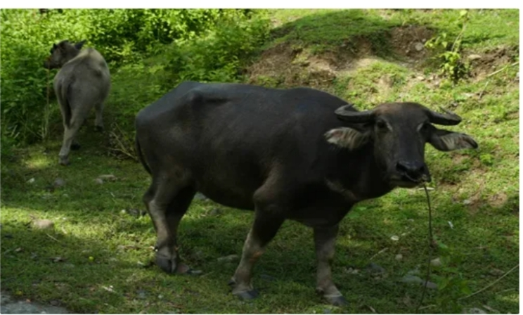

LIVESTOCK PRODUCTS
FISHERIESAND AQUATIC RESOURCES
Cagayan's coastline is one of the longest in the country having almost 73% of Cagayan Valley Region's coasts. This is aside from the large rivers and their tributaries, lakes, creeks and streams which are also rich fishing and aquaculture grounds. Untapped coastal fishing grounds stretch from the towns of Sta. Praxedes in the West to Sta. Ana on the East, on its Northern coast facing the Babuyan Channel (China Sea); an from Sta. Ana down to Penablanca on its eastern coast facing The Philippine Sea (Pacific Ocean).
CARABAO PRODUCT

Filipinos are familiar with the kalabaw: an icon dubbed the Philippines’ “National Animal,” the strong and hard-working creature that plows fields. But in Tuguegarao City, a small town up in the northern region of the country, one word best describes the bovine: nasingngo (delicious).
CARABAO MILK
Carabao’s milk is at its freshest in the morning, right after a harvest from the farms in Namabbalan, which is the barangay known as Tuguegarao’s main source of carabao milk. (The milk is, of course, pasteurized.) A bottle from Dairy East — which is where most locals get fresh carabao’s milk — is warm, and feels like a hug from the moment it touches the tip of your tongue to seconds it takes to flow down from your throat to your stomach. It’s creamy, and so rich that you’d almost think it was savory. It also has a subtle sweetness that is reminiscent of powdered milk. It’s perfect for a nice, thick milkshake, but also makes for a really rich butter.
CANDYMILK
Carabao milk candy is distinct in its form, taste, and texture. Unlike soft pastillas, it comes in chewy rectangular chips. There’s a depth of flavor in carabao milk candy that I can only attribute to carabao’s milk — a sort of powdered milk sweet after-taste, without the dryness of Mik-Mik. There are three popular carabao milk candy makers in Tuguegarao: Dairy East, Alcala Sweets, and Teaño Alcala. Dairy East’s version is a little sweeter than the other two, Alcala Sweets’ has a more muted carabao-milky taste, and Teaño’s candy is a little softer and chewier (especially when made fresh).

CARABAO CHICHARRON
Unlike the fried pig skin version most of the world is familiar with, carabao skin chicharron doesn’t curl into crunchy morsels. It puffs into crisp, airy, practically melt-in-your-mouth balls. The snack is sold by the same mambabalut (people who sell balut) that roam the streets at night. Otherwise tasteless, it’s typically seasoned with salt, pepper, and betsin. But the Lighthouse Cooperative, a local company that sells homegrown goods, has given the treat a name: Chicharabao. And while salt and pepper is well and good, Chicharabao reinvented carabao chicharron by giving it three different flavors: garlic, onion and vinegar, and hot and spicy.
Photo by JASMINE P. TING
PATA
Tuguegarao’s best cara-beef tapa can’t be found in any restaurants or grocery store freezers. Tapa is a homemade, family-owned business affair. The best marinated cara-beef can be found in small homes, between the narrow eskinitas of the city, with signs that read “Homemade Tapa.” A couple of the best are found in an area called Bagumbayan, namely Neneng’s and Cadatal’s. Cara-beef has a natural gamey flavor that draws a lot from its meaty, somewhat creamy smell. It is tougher than regular beef, so when cooking the tapa there’s a need to cook it in a water and oil mixture, to ensure that the meat stays tender.
Back